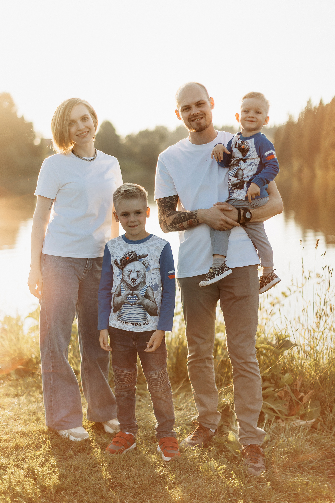

Обо мне.
Мне 35 лет. Я женат, у меня двое сыновей. Живу в сибирском городе Кемерово, но планирую в ближайшее время переехать в Сочи на ПМЖ.
Я люблю хорошие книги, интересное кино и сериалы, тяжелую музыку, интересуюсь искусством!
Образование.
У меня высшее юридическое образование.
Опыт работы.
Я 15 лет работаю юристом, но пришло время перемен. Хочу работу с более свободным графиком,
чтобы больше времени проводить с семьей.
Любимые книги.
- Дж.Р.Р. Толкин - Властелин колец
- Бернар Вербер - Танатонавты (полная серия книг)
- Фрэнк Герберт - Дюна
Любимые фильмы и сериалы:
- Матрица
- Интерстеллар
- Во все тяжкие
- Декстер
- Бумажный дом
В сентябре я начал курс fullstack-разработки, но спустя 4 месяца я понял, что backend это не мое.
В феврале я перевелся на курс frontend и пока мне все очень нравится!